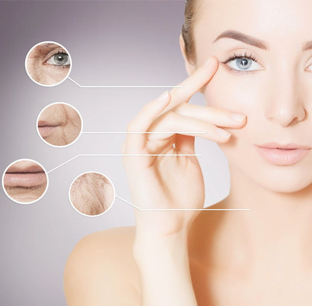
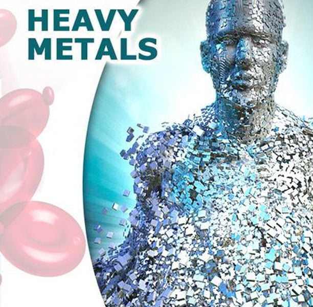

Detox & IV Therapy
Detoxification
Experience the best heavy metal detox for adults at The Churchill Center. Complete body detox cleanse and mold mycotoxin treatment available in Arcadia.
View treatment →Treatments · Detox & IV Therapy
Discover Poly MVA IV therapy at The Churchill Center. Our naturopathic medicine approach offers personalized treatments to boost your health and wellness.

Especially after the pandemic, everyone deserves to live their lives without fear, disease, depression, anxiety, stress, and poor body image. Our IV Vitamin Therapy has been called the gold standard, with formulations that provide your body with a sense of comprehensive well-being. Our IV therapies deliver a precise combination of pure, organic vitamins, nutrients, fluids, electrolytes, and antioxidants, addressing deficiencies you may not have been aware of. The result is a noticeable enhancement in your health and well-being. Each IV drip is meticulously tailored to meet your specific needs and objectives, optimizing your performance and vitality for both work and leisure.
In contrast to conventional oral supplements, our hangover IV therapy ensures optimal absorption. It effectively restores hydration, replenishes vital vitamins and nutrients, revitalizes your appearance, and enhances your overall well-being, helping you realize your full potential.


Immune System Strengthening
Anti-aging
Athletic Performance and Recovery
Metabolic Enhancement, Weight Loss
Hang-over and Headache Relief
Cold and Flu Symptoms
Fatigue
Brain Fog, Memory Loss, and Dementia
Heavy Metal Toxicity
PMS
Menopausal Symptoms
Stress
Esthetic Beauty: Skin, Hair, and Nails
Let us do all the traveling to you in the comfort of your home or office!
Our price is comparable to most ER co-pays — all without the hassle, time and expense of going to the ER.
You may benefit from mobile IV therapy (intravenous) therapy if you are suffering from the following, your results may vary from person to person.
Dehydration due to loss of fluids: sports activities, flu, vomiting, diarrhea, sweating
Hangovers
Nutrient Deficiencies: Vit D, Vit B12…
Hangovers
Stress/Anxiety
High blood pressure
Detoxification
Nutrient repletion, especially if you have a reduced ability to absorb nutrients via GI tract
To Boost Immunity
Beauty: to enhance the skin, hair and nails
Weight loss
The Churchill Center · Arcadia
Consultations in person or virtual.